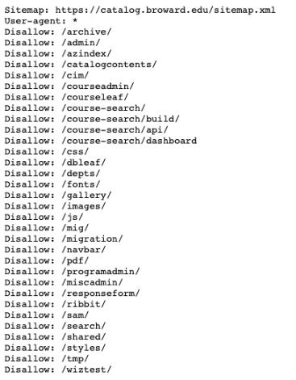
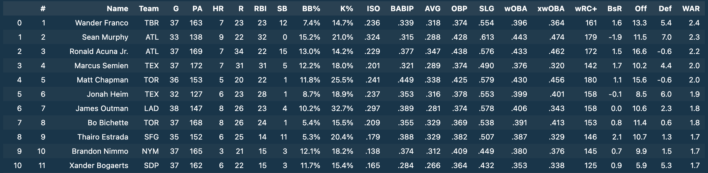
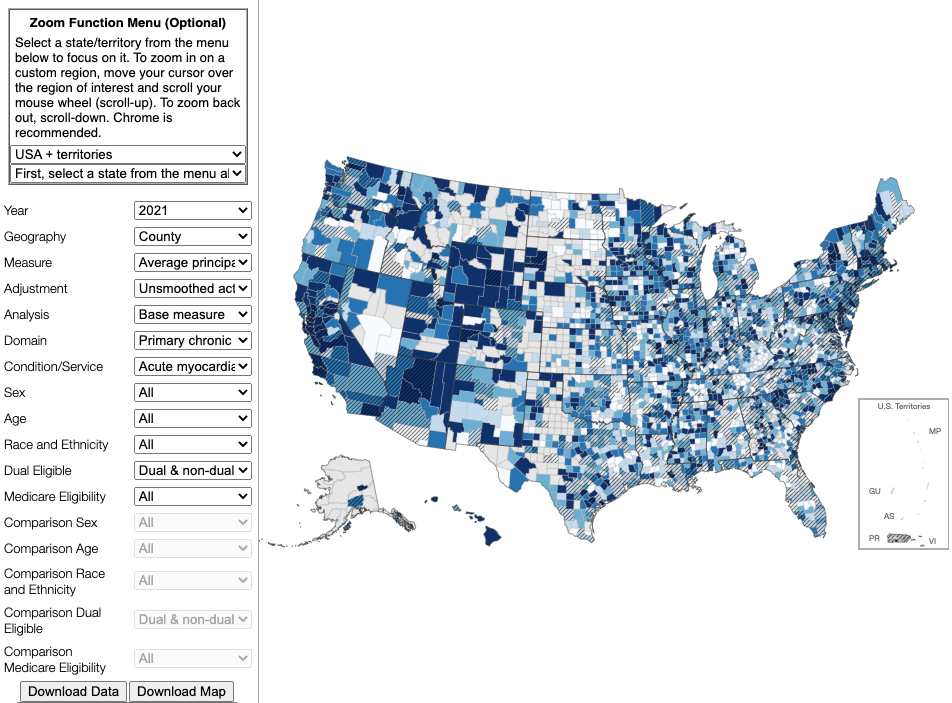

Assessing a Web Scraping Task
Judah Axelrod and Erika Tyagi
2023-05-19
What is web scraping?
- Web scraping is the use of programming to extract structured text or data from a website
- It is generally used to automate tasks that would take too long (or be too error-prone) to feasibly do manually
How does Urban use web scraping?
- Collecting thousands of community college course descriptions from the FLDOE website
- Downloading hundreds of CSV files from the Centers for Medicare & Medicaid Services website that all required clicking different dropdowns from a menu of options
- Collecting the contact info for all notaries in Mississippi by clicking through thousands of pages on the Secretary of State website
- Pulling voting history information from the North Carolina State Board of Election website by searching for thousands of registered voters
What are some drawbacks of web scraping?
- Not all sites can be legally or responsibly scraped
- Repeated requests to a website can lead to rate limiting (i.e. capping the number of requests over a certain period of time)
- Depending on the task and site layout, complexity can vary widely
- Web scraping code can be brittle as websites change over time

What are the variables that affect how difficult a web scraping task is?
- How many different websites are involved in the web scraping process?
- Does the website have dynamic content or only static content?
- Is it easy to extract the info we want once we reach the desired webpage?
1. Different Webpages
- Intuitively, scraping information from one website is simpler than doing so from many websites
- If the layouts of the sites are different, difficulty vastly increases
- Rule of thumb: Think of this as a unique web scraping task for each uniquely structured website
- Web crawlers such as
scrapyexist to traverse many websites and grab all relevant information, but without easy ways to filter through that metadata, this can quickly become infeasible - For jobs that take a long time to run (e.g. more than a few hours), gracefully logging and handling issues can add complexity
2. Static vs Dynamic Content
- For a static page like a Wikipedia article, packages like
BeautifulSouporpandascan grab HTML text without too much complexity by parsing HTML tags - For pages with dynamic content like clickable buttons or dropdown menus, the
Seleniumpackage is needed and the complexity goes up- Rule of thumb: Would a human user need to take any actions (besides scrolling up or down) to navigate to the desired info, or is it immediately available on the webpage?
Static Content Example
- Grabbing baseball statistics from fangraphs.com
import requests
import urllib.request
from bs4 import BeautifulSoup
import re
import pandas as pd
for k in range(1,6): #Runs loop for each of the 5 leaderboard pages on Fangraphs.com
urlpage = 'https://www.fangraphs.com/leaders.aspx?pos=all&stats=bat&lg=all&qual=y&type=8&season=2023&month=0&season1=2023&ind=0&page='+str(k)+'_30'
page = urllib.request.urlopen(urlpage)
soup = BeautifulSoup(page,'lxml')
if k == 1: #First iter only, creates dataframe with extracted column names
fields = []
headers = soup.find_all('th',attrs={'class':'rgHeader'}) #Names were located inside <th> tags with class rgHeader
for i in range(len(headers)):
fields.append(headers[i].getText())
ldrboards = pd.DataFrame(columns=fields)
regex = re.compile('rgRow|rgAltRow')
table = soup.find_all('tr',attrs={'class':regex}) #Finds all instances of <tr> tag that have class = rgRow or rgAltRow
for i in range(len(table)):
table_td = table[i].find_all('td')
stats = []
for j in range(len(table_td)):
stats.append(table_td[j].getText())
ldrboards.loc[len(ldrboards)] = stats #Appends row
ldrboardsStatic Content Example (cont.)
Result of previous code chunk is a pandas dataframe with the baseball stats we want!
Dynamic Content Example (1/2)
Dynamic Content Example (2/2)

Dynamic Content Example (2/2 cont.)
from bs4 import BeautifulSoup
import json
import os
from selenium import webdriver
from selenium.webdriver.common.by import By
from selenium.webdriver.chrome.service import Service
from webdriver_manager.chrome import ChromeDriverManager
## NOTE: Some users may want to try a Firefox Driver instead;
## Can comment above two lines and uncomment the below two lines
# from selenium.webdriver.firefox.service import Service
# from webdriver_manager.firefox import GeckoDriverManager
from selenium.webdriver.support import expected_conditions as EC
from selenium.webdriver.support.ui import Select, WebDriverWait
import pandas as pd
import time
def click_button(identifier, by=By.XPATH, timeout=15):
'''
This function waits until a button is clickable and then clicks on it.`
Inputs:
identifier (string): The Id, XPath, or other way of identifying the element to be clicked on
by (By object): How to identify the identifier (Options include By.XPATH, By.ID, By.Name and others).
Make sure 'by' and 'identifier' correspond to one other as they are used as a tuple pair below.
timeout (int): How long to wait for the object to be clickable
Returns:
None (just clicks on button)
'''
element_clickable = EC.element_to_be_clickable((by, identifier))
element = WebDriverWait(driver, timeout=timeout).until(element_clickable)
driver.execute_script("arguments[0].click();", element)
def select_dropdown(identifier, by=By.XPATH, value=None, index=None):
'''
This function clicks on the correct dropdown option in a dropdown object.
It first waits until the element becomes selectable before locating the proper drop down menu. Then it selects the proper option.
If the page doesn't load within 15 seconds, it will return a timeout message.
Inputs:
id (string): This is the HTML 'value' of the dropdown menu to be selected,
found through inspecting the web page.
value (string): The value to select from the dropdown menu.
index (int): If index is not None, function assumes we want to select an option by its index instead of by specific value.
In this case, should specify that value = None.
Returns:
None (just selects the right item in the dropdown menu)
'''
element_clickable = EC.element_to_be_clickable((by, identifier))
element = WebDriverWait(driver, timeout=15).until(element_clickable)
if index is None:
Select(element).select_by_value(value)
else:
Select(element).select_by_index(index)
def get_kv(form):
'''
This function extracts key-value pairs from the a form element by parsing it with BeautifulSoup.
Inputs:
form(HTML Object): WebElement representing the form containing course information
Returns:
A dictionary containing key-value pairs with course information
'''
# Get the inner HTML of the form element
html = form.get_attribute("innerHTML")
# Parse the HTML using BeautifulSoup
soup = BeautifulSoup(html, 'html.parser')
# Find all divs with the class "form-group form-group-sm"
divs = soup.find_all('div', {"class":"form-group form-group-sm"})
# Initialize an empty dictionary to store key-value pairs
dict = {}
# Iterate through the div elements
for div in divs:
try:
# Extract the key (label) and value (span) from the div
key = div.find('label').get_text()
value = div.find("span").get_text()
# Add the key-value pair to the dictionary
dict[key] = value
except:
# If extraction fails, do nothing and continue
pass
# Return the dictionary containing course information
return dict
def kv_to_json(dict, school_name):
'''
This function saves the key-value pairs (course information) as a JSON file in a folder named after the school.
Input:
dict(dict): Dictionary containing key-value pairs of the course information
school_name(str): Name of the school the course belongs to
Returns:
None (just writes out the JSON data for the course)
'''
# Create the directory for the school if it doesn't exist
dir = f"data/fldoe-schools/{school_name}"
if not os.path.exists(dir):
os.mkdir(dir)
# Use the Course ID as the file name
file_name = dict["Course ID"]
# Save the dictionary as a JSON file in the school's directory
with open(f'{dir}/{file_name}.json', 'w') as fp:
json.dump(dict, fp)
def get_course_info(school_name, course_link, go_back=1):
'''
This function clicks on a course link and retrieves a table with the course description in JSON format.
Inputs:
course_link (HTML object): Course link found using Selenium's find_elements functionality
go_back (int): The number of pages to traverse backward, currently no values other than 1 are used.
Returns:
None (just writes out the JSON data for the course)
'''
# Click on course
course_id = course_link.get_attribute('id')
click_button(course_id, by=By.ID)
# Wait until HTML panel housing the course information is loaded on the page
try:
course_panel_loaded = EC.presence_of_element_located((By.XPATH, '//*[@id="ContentPlaceHolder1_pnlTabCollectionDiscipline"]/div/div[2]'))
WebDriverWait(driver, timeout=15).until(course_panel_loaded)
except:
print('Couldn\'t find element')
form = driver.find_element('xpath', '//*[@id="ContentPlaceHolder1_pnlTabCollectionDiscipline"]/div/div[2]') #/div")
dict = {}
dict = get_kv(form)
kv_to_json(dict, school_name )
driver.execute_script(f"window.history.go(-{go_back})")
def get_school_courses(school_name):
'''
This function loads all of the course link for a particular institution and calls get_course_info()
Inputs:
school_name (str): abbreviated name of school
Returns:
None
'''
# Get number of pages of courses
try:
page_numbers_present = EC.presence_of_element_located((By.XPATH, '//*[@id="ContentPlaceHolder1_gvCoursesGridview"]/tbody/tr[502]/td/table/tbody/tr/td[1]/span'))
WebDriverWait(driver, timeout=10).until(page_numbers_present)
n_pages = int(driver.find_elements(By.TAG_NAME, 'tbody')[-2].size['width']//32)
except:
n_pages = 1
print(f'{n_pages} page(s) of courses')
current_page = 1
# Iterate over all pages of courses within the discipline
more_pages = True
while more_pages:
# Within a page, determine how many courses there are
course_links_clickable = EC.element_to_be_clickable((By.CLASS_NAME, 'btn-link'))
WebDriverWait(driver, timeout=15).until(course_links_clickable)
n_course_links = len(driver.find_elements("xpath", '//*[@class="btn-link"]'))
print(f'{n_course_links} courses on this page')
# Iterate over all the courses on that page, calling get_course_info() for each one
for j in range(n_course_links):
# Take break every 30 links to give page chance to reload
if j % 30 == 29:
print('Sleeping for 30 seconds')
time.sleep(10)
course_links_clickable = EC.element_to_be_clickable((By.CLASS_NAME, 'btn-link'))
WebDriverWait(driver, timeout=15).until(course_links_clickable)
print(f'School {school_name}, Page {current_page}, Course {j}')
course_links = driver.find_elements("xpath", '//*[@class="btn-link"]')
course_link = course_links[j]
go_back = 1
get_course_info(school_name, course_link, go_back=go_back)
current_page += 1
# After getting all courses on a page, try to go to the next page.
# If there isn't one, click on "Reset Filters" button in preparation for transition to the next school and exit the while loop
try:
click_button(identifier=f'//*[@id="ContentPlaceHolder1_gvCoursesGridview"]/tbody/tr[502]/td/table/tbody/tr/td[{current_page}]/a', timeout=10)
print(f'Proceeding to page {current_page}')
print('Sleeping for 60 seconds')
time.sleep(60)
except:
print(f'There is no page {current_page}, resetting filters')
more_pages = False
click_button(identifier='//*[@id="ContentPlaceHolder1_cmdResetFilters"]')
print('Sleeping for 60 seconds')
time.sleep(60)
if __name__ == '__main__':
# Read in list of schools and their HTML codes
schools = pd.read_csv('data/school_metadata.csv')
# Can tweak this parameter based on how many schools have been successfully scraped
START_SCHOOL = 0
# Home page url
url = "https://flscns.fldoe.org/Default.aspx"
service = Service(executable_path=ChromeDriverManager().install())
driver = webdriver.Chrome(service=service)
driver.get(url)
# Go to find an institution course
click_button(identifier='//*[@id="content"]/nav/div[1]/div/ul/li[2]/a')
click_button(identifier='//*[@id="dropdownmenu1"]/li[2]/a')
# Load all courses in one page
select_dropdown(identifier='//*[@id="ContentPlaceHolder1_ddlPageSize"]', value='500')
# Iterate through the schools in the list
for i in range(len(schools)):
school_name = schools.loc[i, 'school_full']
if i < START_SCHOOL: # Will skip if already have that data scraped
continue
select_dropdown(identifier='//*[@id="ContentPlaceHolder1_ddlInstitution"]', by=By.XPATH, value=str(schools.loc[i, 'value']))
click_button(identifier='//*[@id="ContentPlaceHolder1_btnSearch"]')
print(f'*****SCRAPING SCHOOL {school_name} (number {i})*****')
if i == START_SCHOOL:
get_school_courses(schools.loc[i, 'school_abbrev'])
else:
get_school_courses(schools.loc[i, 'school_abbrev'])
driver.quit()View the full public repo here
3. Identifying Desired Information
- Possible future task: scraping area median income from HUD website
- Upside: Only one webpage, can use
Seleniumto navigate dropdowns - Downside: Numbers we want to grab can be in different places within each webpage
What questions should I be asking at the outset?
- Can I get the data without web scraping? (e.g. Is there an API or download option? Can you contact the website owner to request access to the data?)
- Am I legally allowed to scrape the website? Are there any site/rate limits or responsible web scraping considerations?
- How many datasets or pieces of text need to be scraped?
- Is webpage layout consistent or unstandardized?
- Are there Captchas, pop-ups, or ads blocking the content you want?
- Does the webpage have slow or inconsistent load times?
- What tools/packages are needed for the job?
What web scraping resources exist at Urban?
- Urban’s Automated Data Collection Guidelines
- Use Site Monitor to monitor your effect on the site’s response times
- Use the Tech Intake Form to request assistance on a web scraping task
- The Python Users Group has web scraping resources in our GitHub repository, and we’re happy to answer questions in the #python-users Slack channel